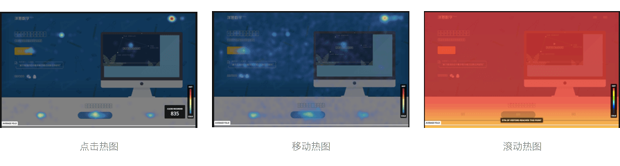
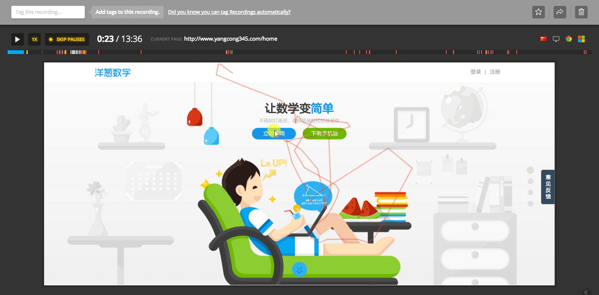
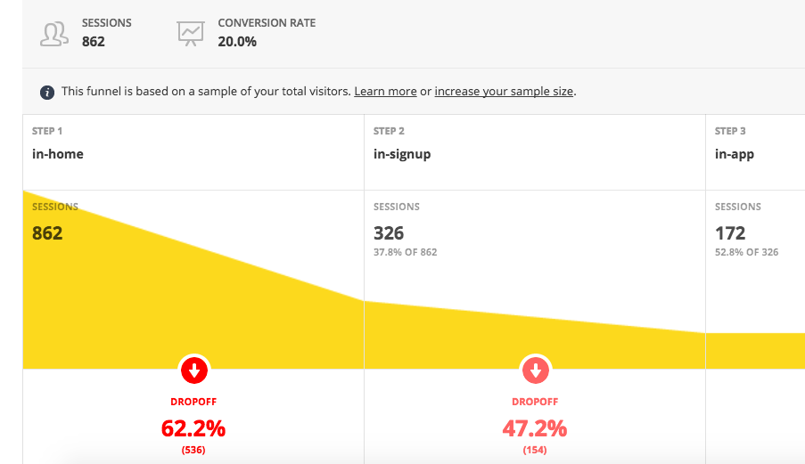

介绍Hotjar 一款用户行为分析工具
我们常用的数据分析平台，类似mixpanel，能为我们提供丰富的访问数据和用户行为数据。展示宏观的用户访问图景比如活跃数据、留存数据访问漏斗是他们的强项。当我们想探寻一项数据背后的原因——用户看到了这块内容了么？什么停止了用户继续使用？..等等，不自觉就会想要看看个体用户到底怎么用我们的网站的。
这时我和Hotjar不期而遇，这是一款多合一的分析和反馈工具，提供了诸如热力图、视频录像、漏斗等工具。你可以协同的使用它们去衡量网站的现状。特别的屌丝友好的是，Hotjar有免费的plan，适合抱着尝试心态的个人活着初创团队试用。（这么卖力的宣传，我真没有回扣）
我毫不犹豫地和前端coder一起把他部到了代码里。几天过去了，我们看看结果
Heatmap 页面热力图
用于分析用户与产品交互的点击、移动、滚动行为。以此推断页面的设计、布局等是否合理。 免费版可抓去3个页面，设置了首页、章节列表、教师首页，成功的只有首页（首页是静态其他的是单页面应用？）

屏幕录像
可记录从用户进入到跳出产品的使用全过程，用于分析用户在某页面具体的使用行为。这个玩法很多，可以根据需要筛选你想看的视频：用户访问了多少页面；从什么页面进入、退出；访问时长；访问设备、浏览器等等。

访问漏斗
依据用户的访问路径计算漏斗。这块可用于和我们基于埋点的分析进行交叉验证。 目前统计成功的是首页－注册－应用内的成功漏斗，数据如下：

Hotjar还提供表单操作数据分析，以及投票、问卷等页面上的反馈功能。
总结
Hotjar适合推荐给团队的所有成员，产品经理、工程师、设计师、市场不同的角色可以用不同的视角使用此工具，为持续改善产品提供有力支持。